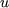
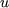
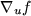
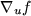
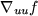
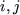
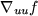
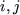
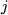
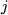

It is assumed that a nonlinear element type
is specified in terms of internal variables
u, whose names
are those given on the ELEMENT TYPE
data cards
in an SDIF file (if the element has no useful internal
variables, the internal and elemental
variables are the same and the
internal variables will have been named after the elementals), see
Section 3.2.15. An optimization procedure is likely to require
the values of the element functions
and possibly their first and second, derivatives.
These derivatives need only be given with respect
to the internal variables.
For if we denote the gradient
and Hessian
matrix of an element function
 with respect to  by
with respect to  by
We thus need only supply derivatives
with respect to  . Formally, we must define the function value
. Formally, we must define the function value  ,
possibly the gradient
vector  (i.e., the vector whose
,
possibly the gradient
vector  (i.e., the vector whose  -th
component is the first partial derivative with respect to the
-th
component is the first partial derivative with respect to the  -th
internal variable) and, possibly, the Hessian
matrix 
(i.e., the matrix whose -th entry is the second partial
derivative with respect to the
-th
internal variable) and, possibly, the Hessian
matrix 
(i.e., the matrix whose -th entry is the second partial
derivative with respect to the  -th and -th internal variables),
all evaluated at
-th and -th internal variables),
all evaluated at  . We now describe how to set up the data for a
given problem.
. We now describe how to set up the data for a
given problem.